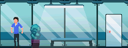

Gameplay recording, game is limited to a specific window size.
Overview
Project Underline is a side-scrolling shooting platformer, telling the story of the player,
an “Unstable” in a fictional earth, far forward in the future. This project was one of the CAS
(Creative Action Service) projects I did throughout my high school.
The project was a remake of a concept I had on 2016, but it was more fleshed out with a meatier
story, new movement options, fleshed out animations and features a livelier color palette than
the previous concept.
Responsbilities
I was involved heavily in the pixel art, 90% of all of the art and animation in the game, and the HUD of the game, while Steven, does the various effects such as uppercut effects, energy flashes and more.
Coding wise, I was mostly involved in the coding of character movement, HUD and abilities. Steven was involved with coding of the terrain interaction with player as well as streamlining the general code.
Concept for the story was a combined effort between me and Steven, developing the concept I had from 2016. Steven wrote the script and additional story beats for in-game collections that are not added due to time constraints.

Animations for various different objects in the game and comparison to the player.
Various Challenges
Coding a game is a great undertaking as it takes a lot of time investment in both art and coding department. Throughout the progress of making the project, learning from the past mistake I made with the last project of being extremely ambitious, myself and Steven decided to make a demo, one level but we put our all to it.
We also knew that we have small amount of experience with sound effects and composition and focusing on them would make us lose a lot of time, hence we decided to focus on the visuals, story and coding, things we are confident we can do well on.
Interesting Experiences
Throughout the coding process, one of the movement sets, wall jumping was discovered as a mistake due to how sprites work in Game Maker. Simply, crouching changes the sprite to a slide sprite which stretch their legs, having legs stuck inside of a terrain will stop the character from falling, creating a semi-wall grab mechanic for the player to traverse the environment.
This mechanic as time goes on impacted the way we designed the map. As the players no longer needed to be animation locked (lift to go up), we decided to make the game and the map a run and gun feel, adding abilities such as boost, shields (for quick repositioning), and sliding.